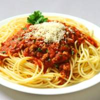
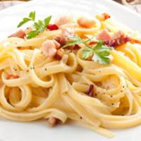
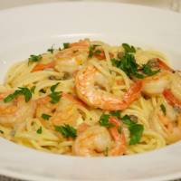

Menu
Espaguete à Bolonhesa
Molho de tomate fresco, carne moida, temperos a moda chefe.
Talharim à Carbonara
Molho bechamel, tira de bacon defumado, ovos, parmesão e temperos.
Talharim com Strogonoff de carne

Molho branco, alcatra em cubos, azeitonas, champignon, tomate picado e temperos da casa.
Espaguete Pescara
Molho branco, camarão, tomate cereja, brocolis e temperos.